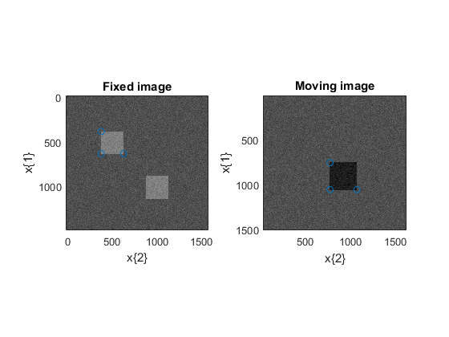

elxExampleCorrespondingPoints
Two images are registered with mutual-information. The cost function takes also into account the Euclidean distance between corresponding points (landmarks).
Contents
- Get the default configuration and test the elastix version
- The fixed image: two squares
- The moving image: one larger square
- The elastix parameters
- The fixed and moving Corresponding points (landmarks)
- Plot the fixed and moving images as well and the corresponding points
- Testing the two weights
- Plot the registered moving image, the corresponding points defined in the fixed image
- Plot the metrics for each resolution
- License
Get the default configuration and test the elastix version
myElxConf = elxDefaultConfiguration(); [Status, ErrorMessage] = elxTestElastixVersion(myElxConf); if ~Status, error(ErrorMessage); end
The fixed image: two squares
The fixed image represents two squares
ISize = [300 320];
FixedImage.Data = 80*ones(ISize);
FixedImage.x{1} = 5*(0:ISize(1)-1)-10;
FixedImage.x{2} = 5*(0:ISize(2)-1)-20;
[FX1, FX2] = ndgrid(FixedImage.x{:});
FixedImage.Data(80:130,80:130) = 128;
FixedImage.Data(180:230,180:230) = 128;
FixedImage.Data = uint8(FixedImage.Data + 10*randn(ISize));
The moving image: one larger square
MovingImage.x{1} = 5*(0:ISize(1)-1)+15;
MovingImage.x{2} = 5*(0:ISize(2)-1)+30;
[MX1, MX2] = ndgrid(MovingImage.x{:});
MovingImage.Data = 80*ones(ISize);
MovingImage.Data(150:210,150:210) = 30;
MovingImage.Data = uint8(MovingImage.Data + 10*randn(ISize));
The elastix parameters
We choose:
- the similarity transform
- the mutual-information to compare the two images
- the Euclidiean distance to take into account the corresponding points or landmarks.
myElxParam = cell(1);
myElxParam{1} = elxDefaultParameters('SimilarityTransform', 2);
% As the cost function is the sum of two metric, we set the Registration
% to MultiMetricMultiResolutionRegistration and specify the weight.
% See elastix 4.5 manual §6.1
myElxParam{1}.Registration = 'MultiMetricMultiResolutionRegistration';
myElxParam{1}.Metric = {'AdvancedMattesMutualInformation', ...
'CorrespondingPointsEuclideanDistanceMetric'};
myElxParam{1}.Metric0Weight = 1;
% We will loop over this Metric1Weight parameter
Metric1Weight = [1/2000; 1/200];
myElxParam{1}.MaximumNumberOfIterations = 50;
myElxParam{1}.NumberOfSpatialSamples = 0.05*prod(ISize);
myElxParam{1}.AutomaticScalesEstimation = true;
NumberOfResolutions = 4;
myElxParam{1}.NumberOfResolutions = NumberOfResolutions;
myElxParam{1}.MaximumStepLength = 80;
myElxParam{1}.BSplineInterpolationOrder = 1;
myElxParam{1}.DefaultPixelValue = 80;
myElxParam{1}.ResultImagePixelType = 'unsigned char';
The fixed and moving Corresponding points (landmarks)
FixedPointSet.Points = [FixedImage.x{1}([80 130 130]).' FixedImage.x{2}([80 80 130]).'];
MovingPointSet.Points = [MovingImage.x{1}([150 210 210]).' MovingImage.x{2}([150 150 210]).'];
Plot the fixed and moving images as well and the corresponding points
figure(1); colormap gray subplot(1, 2, 1); imagesc(FixedImage.x{[2 1]}, FixedImage.Data, [0 255]); hold on; plot(FixedPointSet.Points(:,2), FixedPointSet.Points(:,1), 'o'); hold off; axis image; title('Fixed image'); xlabel('x\{2\}'); ylabel('x\{1\}'); subplot(1, 2, 2); imagesc(MovingImage.x{[2 1]}, MovingImage.Data, [0 255]); hold on plot(MovingPointSet.Points(:,2), MovingPointSet.Points(:,1), 'o'); hold off; axis image; title('Moving image'); xlabel('x\{2\}'); ylabel('x\{1\}');
Testing the two weights
for Cpt = 1:2
myElxParam{1}.Metric1Weight = Metric1Weight(Cpt);
StringWeight1 = sprintf('(Metric1Weight=%.2e)', Metric1Weight(Cpt));
[strRegMoving,Transforms,log,success,message] = elxElastix(myElxConf, ...
myElxParam, FixedImage, MovingImage, 'FixedPointSet', FixedPointSet, ...
'MovingPointSet', MovingPointSet);
if ~success
disp(sprintf(' elastix message: %s\n',message{:}))
return;
else
disp(sprintf('Image registered in %f s', log.ElapsedTimeInSec));
disp(sprintf('Transformation parameters : %f %f %f %f', Transforms{1}.TransformParameters));
end
Plot the registered moving image, the corresponding points defined in the fixed image
figure(2); colormap gray imagesc(strRegMoving(1).x{[2 1]}, strRegMoving(1).Data, [0 255]); hold on; plot(FixedPointSet.Points(:,2), FixedPointSet.Points(:,1), 'o'); hold off; axis image; title(['Registered moving image ' StringWeight1]); xlabel('x\{2\}'); ylabel('x\{1\}');
Plot the metrics for each resolution
figure(3); subplot(3, 1, 1) plot([log.ParameterFile(1).Resolution(:).Metric]); xlabel('Iteration #'); title(['The total cost ' StringWeight1]); subplot(3, 1, 2); plot([log.ParameterFile(1).Resolution(:).Metric0]); xlabel('Iteration #'); title('Mutual Information'); subplot(3, 1, 3); plot([log.ParameterFile(1).Resolution(:).Metric1]); xlabel('Iteration #'); title('Mean Euclidian distance');
Warning: Escaped character '\m' is not valid. See 'doc sprintf' for supported special characters. Warning: Escaped character '\m' is not valid. See 'doc sprintf' for supported special characters. Warning: Escaped character '\m' is not valid. See 'doc sprintf' for supported special characters. elastix message: ERROR: when reading the parameter file: elastix message: elastix message: itk::ExceptionObject (000000E48770EED8) elastix message: Location: "unknown" elastix message: File: D:\tk\elastix\exports\tagspublic\elastix_04_8\src\Common\ParameterFileParser\itkParameterFileParser.cxx elastix message: Line: 149 elastix message: Description: itk::ERROR: ParameterFileParser(0000024E8C93D390): ERROR: the file \home.ansatt.ntnu.no does not exist. elastix message: elastix message: elastix message: ERROR: Something went wrong during initialization of the configuration object. elastix message: ERROR: elastix message: The configuration object has not been initialized. elastix message: Errors occurred!
end
License
Copyright (C) CNRS and Riverside Research Contributors: Alain CORON, Jonathan MAMOU (2010)
alain.coron@upmc.fr, JMamou@riversideresearch.org
This software is a computer program whose purpose is to effectively register images within Matlab (http://www.mathworks.com) with elastix (http://elastix.isi.uu.nl/), an open-source image-registration software.
This software was supported in part by NIH Grant CA100183, the Riverside Research Biomedical Engineering Research Fund, and CNRS.
This software is governed by the CeCILL-B license under French law and abiding by the rules of distribution of free software. You can use, modify and/ or redistribute the software under the terms of the CeCILL-B license as circulated by CEA, CNRS and INRIA at the following URL "http://www.cecill.info".
As a counterpart to the access to the source code and rights to copy, modify and redistribute granted by the license, users are provided only with a limited warranty and the software's author, the holder of the economic rights, and the successive licensors have only limited liability.
In this respect, the user's attention is drawn to the risks associated with loading, using, modifying and/or developing or reproducing the software by the user in light of its specific status of free software, that may mean that it is complicated to manipulate, and that also therefore means that it is reserved for developers and experienced professionals having in-depth computer knowledge. Users are therefore encouraged to load and test the software's suitability as regards their requirements in conditions enabling the security of their systems and/or data to be ensured and, more generally, to use and operate it in the same conditions as regards security.
The fact that you are presently reading this means that you have had knowledge of the CeCILL-B license and that you accept its terms.
$Id: elxExampleCorrespondingPoints.m 9 2012-05-30 18:21:59Z coron $